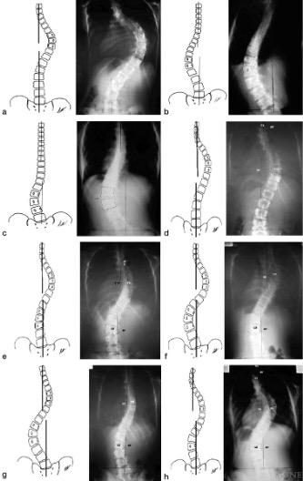

Adapted from: Qiu G, Zhang J, Wang Y, et al. A new operative classification of idiopathic scoliosis: a peking union medical college method. Spine (Phila Pa 1976). 2005 Jun 15;30(12):1419-26. doi: 10.1097/01.brs.0000166531.52232.0c.
1) Description of Measurement
The Cincinnati / PUMC Classification System is an operative classification for adolescent idiopathic scoliosis (AIS) designed to improve reliability and to directly guide surgical fusion strategy. Unlike earlier systems, it incorporates not only coronal curve morphology, but also curve magnitude, flexibility, apical rotation, stable vertebra, and thoracolumbar sagittal alignment.
Curves are divided into three major types based on number of apices:
These are subdivided into Ia, Ib, Ic, IIa, IIb, IIc, IId, IIIa, and IIIb, each with distinct morphologic patterns and fusion guidelines.
2) Instructions to Measure
For each patient obtain standing AP, lateral, and supine side-bending radiographs.
Record the following parameters:
3) Normal vs. Pathologic Ranges
4) Important References
Qiu G, Zhang J, Wang Y, et al. A new operative classification of idiopathic scoliosis: a peking union medical college method. Spine (Phila Pa 1976). 2005 Jun 15;30(12):1419-26. doi: 10.1097/01.brs.0000166531.52232.0c.
Nash CL Jr, Moe JH. A study of vertebral rotation. J Bone Joint Surg Am. 1969 Mar;51(2):223-9.
Qiu G, Zhang J, Wang Y, et al. A new operative classification of idiopathic scoliosis: a peking union medical college method. Spine (Phila Pa 1976). 2005 Jun 15;30(12):1419-26. doi: 10.1097/01.brs.0000166531.52232.0c.
5) Other info....(Curve Types and Surgical Logic)